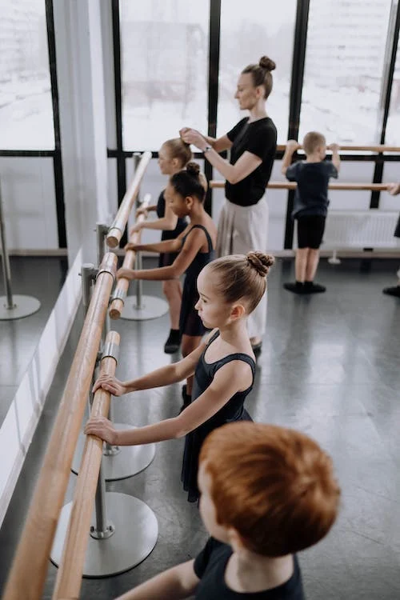
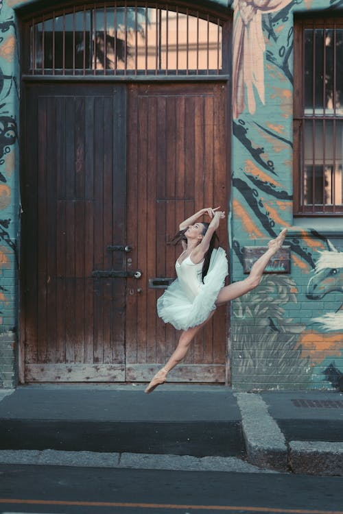

How ballet can help children
Learning routines and memorising moves through dance is great for allowing children to develop their mental strength. Ballet requires memory training and coordination and allows them to explore movement, as well as teaching dedication and discipline. Regular classes will help children learn and practice these very important life skills which they can then transfer into everyday life activities such as school and work. Creative movement is beneficial to a child's growth and development and through dancing, they will awaken their inner creativity.
How ballet can help adults
A lot of tensions can build up from everyday life and taking part in adult ballet dance classes can be used as a form of meditation. Growing increasingly popular over the past few years, many praise the benefits of the full body workout that it provides. Along with gaining posture, strengthening your upper body and core, you will also improve your flexibility, balance and coordination - to name a few. Adult ballet builds lean and toned muscle and you will begin to see results within just a few classes.
